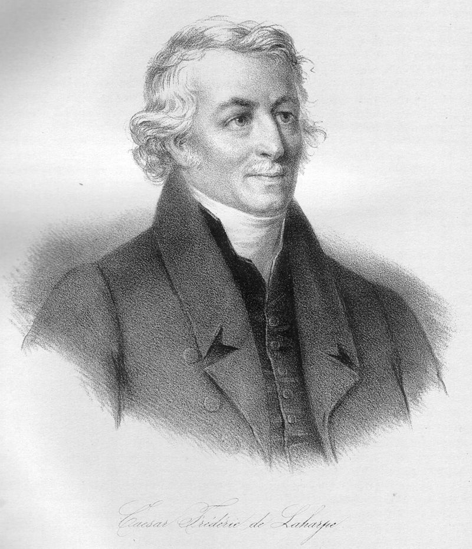
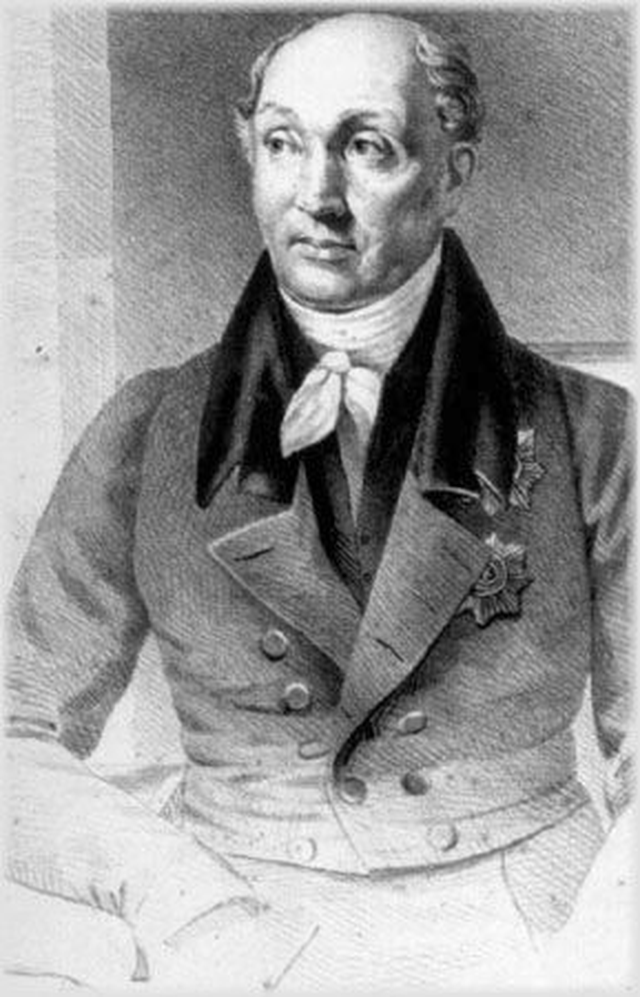
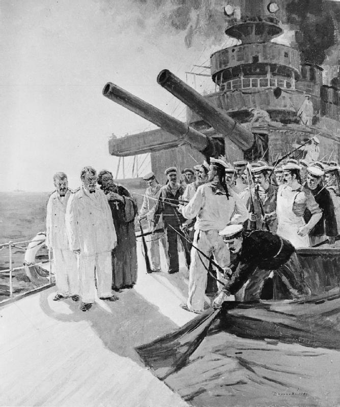
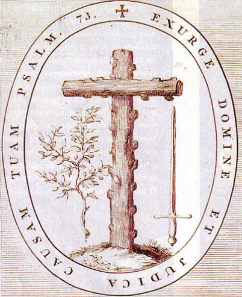

1812년 - 왜 나폴레옹은 러시아로 갔을까 (하)
게시: 2019-07-01T06:30:37+09:00
러시아의 짜르 알렉산드르는 독일 출신 할머니와 독일 출신 어머니를 둔 아이로 태어났습니다. 그 할머니는 처녀적 이름이 안할트-제릅스트(Anhalt-Zerbst) 출신의 소피(Sophie)로서 나중에 예카테리나(Екатерина) 대제로 알려진 러시아의 여황입니다. 알렉산드르의 어머니는 뷔르템베르크 출신의 공주였지요. 다른 유럽 왕가들도 마찬가지였습니다만, 러시아 로마노프 왕가는 이렇게 계속 외국 특히 독일 출신의 공주들을 왕비로 맞아들이다보니 러시아 왕가는 일반 러시아 국민들은 물론 러시아 귀족들에 비해서도 서구의 발전된 문물과 사상에 대해 좀더 열린 마음을 가지고 있었습니다. 그래서 춥고 먼 동쪽 구석의 러시아를 서구화시키는 노력은 대개 국왕을 중심으로 위로부터의 혁신이 위주가 되었습니다. 오히려 귀족들과 국민들은 그런 서구 사상의 침투에 대해 반감을 가지고 반발하는 것이 일반적이었습니다. 그런 전통은 알렉산드르에게도 거의 그대로 적용되었습니다. 그는 어려서부터 스위스 출신의 공화주의자인 라 아르프(Frédéric-César de La Harpe)를 가정교사로 하여 루소 등의 프랑스 계몽사상을 배우며 자랐습니다. 당연히 그는 상당히 개방적인 사고방식을 가지고 자랐습니다. 유럽 어느 나라보다 더 지독한 전제 군주 집안에 태어난 왕자로서 계몽사상에 젖어든 어린 손자 알렉산드르를 보고 예카테리나 대제는 이렇게 말했다고 전해집니다. "이 꼬마는 자기 모순의 매듭덩어리 같구먼."

(라 아르프입니다. 그는 30대를 러시아에서 알렉산드르의 가정교사로 보낸 뒤, 베른의 귀족 정권에 시달리던 고향 스위스 보(Vaud) 지방을 해방시키고 더 나아가 스위스에 헬베티카 공화국(République Helvétique)을 만들었습니다. 혁명의 폭풍 속에서 그는 추방을 당하는 등 시련을 겪었으나, 나폴레옹이 패망한 이후 그는 옛제자 알렉산드르의 도움으로 그의 고향 보 지방의 권익을 지키는데 큰 기여를 했습니다.) 알렉산드르가 물려받은 전제 군주 짜르의 왕좌는 결코 절대 권력이 보장된 자리가 아니었습니다. 단적인 예로, 그의 할아버지 표트르 3세(Pyotr III )는 그의 홀대에 불만을 품은 근위부대의 반란으로 황비인 예카테리나에게 황위를 빼앗기고 결국 암살되었습니다. 그의 아버지인 파벨 1세(Pavel I) 또한 귀족 출신의 해직 장교들에 의해 아주 간단히 암살되었습니다. 이렇게 할아버지와 아버지가 연이어 암살된 것에는 여러가지 이유가 있었습니다만 표트르 3세나 파벨 1세나 모두 농노들의 처지를 향상시키고 귀족들의 권리를 제한한다는 공통적인 개혁 조치를 취한 바 있었습니다. 러시아는 먼 동구의 대국으로서 소수의 전근대적인 귀족들이 노예 상태의 국민들을 다스리는 나라였습니다. 가령 표트르 3세의 개혁 이전까지만 해도 귀족들은 자기 농노를 죽여도 아무 처벌을 받지 않을 정도였습니다. 나름대로의 그런 전통과 특성을 무시하고 귀족들의 이익을 해친다면, 아무리 동로마 제국 황제의 후계자로서 정통성을 주장하는 짜르라고 해도 야밤에 한낱 개처럼 살해될 수 있었습니다.

(알렉산드르의 평민 출신 고문 스페란스키입니다. 그는 알렉산드르를 따라 에르푸르트 회담장까지 가서 직접 나폴레옹과 환담을 나누기도 했습니다. 귀족들에게 눈엣가시 같은 존재였던 그는 결국 친프랑스파이자 불온사상을 가진 자로 낙인찍혀 1812년 초에 고문직에서 해직되었습니다. 그렇다고 시베리아에 유배를 간 것은 아니고, 핀란드 대학의 학장이 되었습니다.)
그러다보니 비록 알렉산드르가 서구 계몽사상으로 훈련된 개혁적 군주라고 해도 실제 할 수 있는 것은 그리 많지 않았습니다. 그래도 그는 시골 마을 신부의 아들인 스페란스키(Mikhail Speransky)를 고문으로 등용하여 당시 계몽사상가들이 꿈꾸던 입헌 군주국으로 러시아를 탈바꿈시키려는 움직임을 보였습니다. 이는 짜르가 스스로의 권력을 제한하는 결과를 낳게 되는 것이었는데도 그랬습니다. 또 그를 위해서는 무엇보다 자신처럼 선진 교육을 받은 귀족 및 시민들이 많아야 한다는 판단으로 당시 그 넓은 러시아에 딱 3개 있던 대학 수를 6개로 늘리는 등 교육 제도 개선에도 힘을 많이 썼습니다. 물론 개혁은 쉽지 않았고 알렉산드르도 주변 왕족 및 귀족들의 영향을 받으면서 그런 개혁에 대한 열의는 점점 옅어져 갔습니다. 가령 스페란스키가 제시했던 의회, 즉 러시아어로 두마(дума, '생각'이라는 뜻)로 불리는 기구는 거의 1백년이 지난 뒤 노일전쟁의 패전 결과로 발생한 1905년 러시아 혁명을 겪고서야 간신히 설립될 지경이었습니다.

(1905년 러시아 혁명은 러일 전쟁 패배의 여파로 들끓던 사회적 불만이 '피의 일요일' 사건이 계기가 되어 촉발된 것이었습니다. 유명한 포템킨 호의 반란 사건도 이때의 사건입니다.)
그렇게 서구 사회에 긍정적이었던 그는 처음에는 프랑스 시민 계급을 대표하는 나폴레옹이라는 영웅에 대해 흠모하는 마음까지 가지고 있었습니다. 그러다 나폴레옹의 앙기앵 공작 납치 사법 살인이라는 비도덕적 범죄 행위를 보고는 기대만큼 큰 실망을 하여 반-나폴레옹파로 급변하게 되었습니다. 그래서 사실 꼭 그래야 할 필요가 있는 것도 아니었는데 제3차 대불동맹 전쟁에 자발적으로 참전하여 아우스테를리츠에서 나폴레옹의 손에 참담한 패배의 맛을 보게 되었던 것입니다. 그러나 확실히 알렉산드르는 젊은 낭만파 몽상가였던 모양입니다. 그는 1807년 틸지트 회담에서 나폴레옹이라는 대인물을 직접 만나 이야기를 해보고는 나폴레옹의 매력에 젖어든 정도가 아니라 그 속에 첨벙 빠지고 말았습니다. 그는 역시 낭만파 몽상가이자 지략가였던 나폴레옹이 제시한 프랑스와 러시아가 힘을 합해 유럽을 양분하고 콘스탄티노플(이스탄불)에서 출발하여 인도까지 점령하자는 말도 안되는 소리에도 전율했습니다. 그 결과, 분명히 바로 직전까지 영국의 금융 지원을 받으며 피튀기게 싸우던 적수인 프랑스와 동맹을 맺었을 뿐만 아니라, 전혀 엉뚱하게도 여태까지의 돈 줄이자 중요 경제 파트너였던 영국에게 선전포고를 하게 되었습니다. 대신 틸지트 회담에서 알렉산드르는 무엇보다 남쪽의 숙적 오스만 투르크가 차지했던 발칸 반도 등지를 빼앗기를 원했지만, 실질적으로 러시아가 얻은 것은 핀란드 정도였습니다. 나폴레옹에게 있어서 오스만 투르크는 영국의 근동 지방 전략에 저항하기 위해 꼭 필요한 동맹이었고 또 나폴레옹이 구워삶아야 하는 다른 강국인 오스트리아도 오스만 투르크의 땅을 노리고 있었기 때문이었습니다. 하지만 얻은 것에 비해 영국과 척을 진 대가는 컸습니다. 러시아는 토지 귀족의 나라였고, 토지 귀족의 돈벌이는 자신의 장원에서 나오는 농산물을 영국에 수출하고 대신 영국제 공산품을 수입하는 것이었습니다. 알렉산드르가 호기 있게 맺은 틸지트 조약은 러시아 토지 귀족의 이익에 크게 반하는 것이었습니다. 곧장 여기저기서 볼멘 소리가 튀어나왔습니다. 물론 불만 세력들은 모양새 없게 '돈벌이가 안된다'라는 것을 나폴레옹과의 동맹 반대 이유로 대지는 않았습니다. 어디까지나 나폴레옹은 신이 내려주신 왕위를 뺴앗은 찬탈자이고 불온한 프랑스 대혁명의 정신을 계승한 야만인이므로, 동로마제국의 정통성을 계승한 로마노프 왕조는 그 코르시카놈과 동맹을 맺을 것이 아니라 정벌을 해야 한다는 목소리가 점점 높아졌습니다. 짜르 알렉산드르의 모후인 마리아 페오도로브나(Maria Feodorovna)까지 나서서 나폴레옹이 소집한 에르푸르트 회담에 출석하지 말라고 종용할 지경이었습니다. 알렉산드르는 자신을 둘러싼 이런 목소리에 귀를 기울이지 않을 수 없었습니다. 바로 자신의 아버지를 야밤에 칼로 찔러 죽인 자들이 가득찬 왕궁에서 그들의 불만을 무시하는 것은 결코 옳은 생각이 아니었습니다. 게다가 알렉산드르도 나폴레옹이 결코 자신과 유럽을 공유할 인간이 아니라는 것을 서서히 깨닫고 있었습니다. 알렉산드르는 어디까지나 전제 왕정의 군주였지, 결코 낭만적인 친구들로 둘러싸인 젊은 독일 대학생이 아니었습니다. 그는 자신의 권력 기반에 충실하기로 마음을 굳혔고, 그 계기가 된 것은 나폴레옹이 바르샤바 공국을 독립 폴란드 왕국으로 부활시키려고 한다는 소문이었습니다. 물론 그건 나폴레옹과 알렉산드르 사이를 이간질하는 것이 오스만 투르크의 분할에 있어서 오스트리아에게 유리하다고 판단한 메테르니히가 빚어낸 가짜 뉴스였습니다.
이유야 어쨌건, 1810년 12월 31일 발표된 짜르의 칙령은 프랑스산 제품에 대해서는 관세를 부과하고, 반대로 영국 상품에 대해서는 입항 허가를 내주는 내용이었고, 이를 계기로 나폴레옹와 알렉산드르 사이의 전쟁은 거의 기정 사실화되었습니다. 사실 이건 프랑스와 러시아 간의 전쟁이 아니었습니다. 앞서 언급했듯이, 이제 벌어질 전쟁은 유럽 산업화의 주도권을 두고 벌어진 영국 시민 계급과 프랑스 시민 계급의 싸움이었습니다. 이미 산업 혁명이 시작된데다 강력한 로열 네이비를 보유한 영국과 싸울 방법이 궁했던 프랑스가 꺼내든 대륙 봉쇄령이라는 무역 전쟁은 결국 동방의 대국 러시아를 싸움판에 끌어들였고, 결국 영국 대신 러시아가 프랑스를 상대로 대리전을 치르게 된 것이었지요. 자신의 전쟁에 제3자를 끌어들인 것은 영국 뿐만이 아니었습니다. 프랑스도 혼자서 러시아와 싸울 생각은 없었습니다. 나폴레옹은 그가 굴복시킨 독일과 이탈리아 등지의 위성국가들에게 병력과 물자, 자금을 내놓을 것을 요구했습니다. 유럽 거의 전체가 원하든 원치 않든 이 거대한 전쟁에 휩쓸려야 했습니다. 과연 이 전쟁을 바라보는 유럽인들의 시선은 어떠했을까요 ? 물론 대부분은 황제가 또 전쟁을 한다면서 불만이었습니다만, 지식인들 대부분은 이 전쟁을 계기로 유럽의 근대화가 더 빠르게 진행될 것이라고 예상했습니다. 비록 나폴레옹의 점령군 뒤에는 예외없이 무자비한 병참장교와 세관원들이 따라와 점령지의 고혈을 짜내는 것으로 악명 높았지만, 나폴레옹의 정복지에는 프랑스 대혁명 정신을 계승한 헌법과 나폴레옹 법전도 항상 따라오기 마련이었습니다. 심지어 프랑스군이 이례적으로 잔혹하게 난동을 부렸던 스페인에서조차, 지식인들은 나폴레옹이 세운 허수아비 왕 조제프의 정권이 기존 부르봉 왕정보다 스페인을 훨씬 더 근대화시켰다는 것은 인정했습니다. 최소한 헌법이 제정되었고, 중세시절부터 계속 내려오던 고문으로 악명 높은 스페인 종교재판도 폐지되었으니까요. 나중에 나폴레옹이 패망한 뒤 스페인 종교재판은 다시 부활했다가 1834년에야 간신히 폐지되었습니다. 괴테 등 당대의 지성인들은 나폴레옹의 프랑스 제일주의에 대해 분개하면서도 나폴레옹이 동방으로 끌고 갈 그랑다르메(Grande Armee)의 전진과 함께, 신분제 폐지와 천부인권 등의 계몽사상이 저 동방까지 전달될 것이라고 내심 기대하고 있었습니다.

(스페인 종교재판 = 이단심문의 상징입니다. 십자가와 나무가지, 그리고 검이 있습니다. 예수님께서 "Yo, Say Love"를 선창하시는데 이들은 떼창으로 "No Mercy"를 외쳤군요.)
이제 유럽은 누가 영국과 러시아 편에 설 것이고 누가 프랑스 편에 설 것인지, 과연 중립이란 것이 가능할지 외교적인 머리를 굴려야 하는 시점에 도달했습니다.
Source : The Life of Napoleon Bonaparte, by William Milligan Sloane https://en.wikipedia.org/wiki/Alexander_I_of_Russia https://en.wikipedia.org/wiki/Mikhail_Speransky 1812 Napoleon's Fatal March on Moscow by Adam Zamoyski